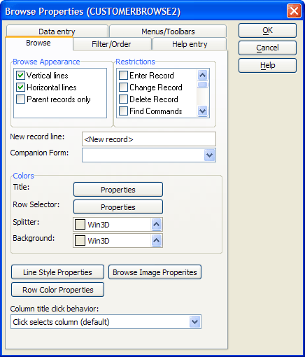
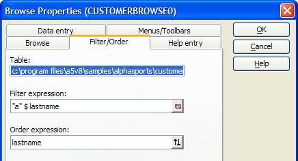
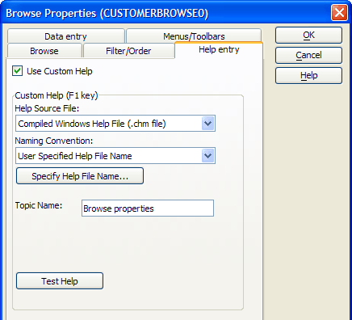
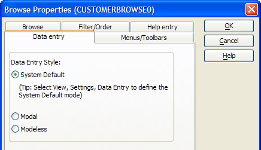
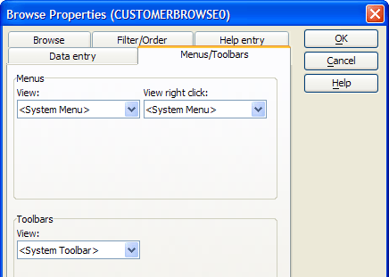

Browse Properties
Using the Browse Properties dialog box, you can change the font, type size, border, grid lines, and other appearance attributes of a browse.
To open the Browse Properties dialog box,
select Browse > Browse Properties, or click
the Properties  button on the
toolbar. Embedded Browses
have additional properties.
button on the
toolbar. Embedded Browses
have additional properties.
|
Item |
Description |
|
Browse Appearance |
Whether vertical and horizontal lines appear on the browse. :BrowseName.gridline_horizontal as L :BrowseName.gridline_vertical as L |
|
Restrictions |
Operator restrictions when using the browse. Change record. :BrowseName.restrict_change as L Delete columns. :BrowseName.restrict_column_delete as L Move columns. :BrowseName.restrict_column_move as L Resize columns. :BrowseName.restrict_column_resize as L Delete record. :BrowseName.restrict_delete as L Edit/open layout. :BrowseName.restrict_editing as L Enter record. :BrowseName.restrict_enter as L Find commands. :BrowseName.restrict_find as L Select index. :BrowseName.restrict_index as L Outline commands. :BrowseName.restrict_outlining as L Query commands. :BrowseName.restrict_query as L Select range. :BrowseName.restrict_range as L Split browse. :BrowseName.restrict_split as L |
|
Grid Lines |
Whether to display grid lines. :BrowseName.Gridline_horizontal as L :BrowseName.Gridline_vertical as L The style and color of grid lines. :BrowseName.Horizontal.line_color as C :BrowseName.Horizontal.line_style as C :BrowseName.Vertical.line_color as C :BrowseName.Vertical.line_style as C |
|
New Record Line |
The entry that appears at the bottom of a browse that allows new entries. :BrowseName.new_record_text as C |
|
Companion Form |
The form that displays when you click F8. :BrowseName.companion_form as C |
|
Title |
The fill style and colors of the title bar. :BrowseName.Title.backcolor as C :BrowseName.Title.fill_style as C :BrowseName.Title.forecolor as C The line style and color of the lines that separate column titles. :BrowseName.Title.line_color as C :BrowseName.Title.line_style as C |
|
Row Selector |
The style of the row selector. :BrowseName.row_selector.backcolor as C :BrowseName.row_selector.fill_style as C :BrowseName.row_selector.forecolor as C The line style and color of the lines that separate browse cells. :BrowseName.row_selector.line_color as C :BrowseName.row_selector.line_style as C |
|
Browse Image Properties |
The images to display in different circumstances. :BrowseName.images.image_focused as C :BrowseName.images.image_marked as C :BrowseName.images.image_sort_down as C :BrowseName.images.image_sort_up as C :BrowseName.images.image_focused as C :BrowseName.images.image_focused as C |
|
Browse Splitter |
The style of the bar that separates the two panes of a split browse. :BrowseName.splitter.backcolor as C :BrowseName.splitter.fill_style as C :BrowseName.splitter.forecolor as C |
|
Browse Background |
The background color of the browse. :BrowseName.background.backcolor as C :BrowseName.background.forecolor as C :BrowseName.background.fill_style as C |
|
Row Color Properties |
The number of rows to assign to each "band". N may be 1, 2, 3, or 4. :BrowseName.cell.N.Count as N The fill style and color of each "band". N may be 1, 2, 3, or 4. :BrowseName.cell.N.backcolor as C :BrowseName.cell.N.forecolor as C :BrowseName.cell.N.fill_style as C |

|
Item |
Description |
|
Table |
The path and name of the table providing the data for the browse. |
|
Filter Expression |
An expression that selects records from the table to display in the browse. :browsename/topparent:tables:tablename.filter_expression as C See also: <OBJECT>.BASEQUERYRUN() and CURRENT_FILTER_EXPN(). |
|
Order Expression |
An expression that orders selected records. :browsename/topparent:tables:tablename.order_expression as C See also: <OBJECT>.BASEQUERYRUN() and CURRENT_ORDER_EXPN(). |

|
Item |
Description |
|
Use Custom Help |
Enables other fields on the tab. |
|
Help Source File |
Enables other fields on the tab. |
|
Naming Convention |
Enables other fields on the tab. |
|
Help File Name |
The path to and name of the compiled help file that contains the help topics. :BrowseName.fieldname.help_filename as C |
|
Help Window Title |
The title of the topic in an Alpha Five help file. |
|
Chapter Name |
Included in the help filename. :BrowseName.fieldname.chapter_name:help_filename as C |
|
Topic Name |
The name of the help topic in a compiled help file. :BrowseName.help_topic as C |

|
Item |
Description |
|
Data Entry Style |
Whether the browse should use the "System default", "Modal", or "Modeless" data entry styles. :BrowseName.data_entry_style as C |

|
Item |
Description |
|
View Menu |
The name of the view menu. :BrowseName.drop_down_menu as C |
|
View Right Click Menu |
The name of the right-click view menu. :BrowseName.right_click_menu as C |
|
View Toolbar |
The name of the view toolbar. :BrowseName.toolbar as C |

Other Properties
|
Item |
Description |
|
Row Height |
Sets the height a browse row. :BrowseName.row_height as N |
See Also
Using the Browse Editor, Right-Click Menus, Embedded Browse Properties